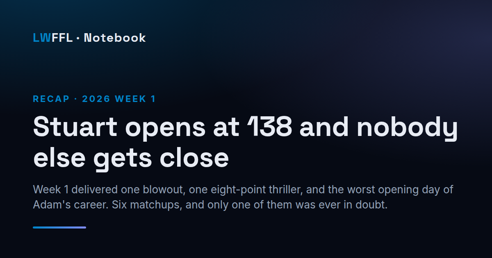

Everybody gets a chance to explain themselves
A sample preview showing the layout — the matchup strip, the ELO lines and the head-to-head history all render from the league's own data once a real week's schedule is in.
This is a sample post showing what a Thursday preview looks like on the page. The prose is placeholder; the structure is real.
How a preview reads
The opening is the week's framing — who has something to prove, which game decides an early division, what the Week 1 results did and didn't tell us. Two or three paragraphs, no more.
Then the matchups worth watching, each with the line and whatever history is relevant:
- The rematch of a playoff game nobody has stopped talking about
- The one where a manager faces the guy he traded his starting quarterback to
- The one that looks lopsided on paper and never is
Why the numbers aren't typed here
On a real preview this section carries a matchup strip generated from the league's ELO ratings and head-to-head record — so the line and the series history are always consistent with Head-to-Head and never quietly go stale.
Images
Drop a file in n/img/ and reference it the ordinary markdown way. An image on its own line becomes a figure, and the alt text becomes the caption:

Use ::: image path | caption instead when the caption should differ from the alt text, and add a line inside the block to let it break the reading column on wide screens.
A post can also set image: in its frontmatter to override the generated share card, so a link with a real photo unfurls with that photo rather than the text card.
Replace this file with the week's real preview and the sample badge disappears on its own.